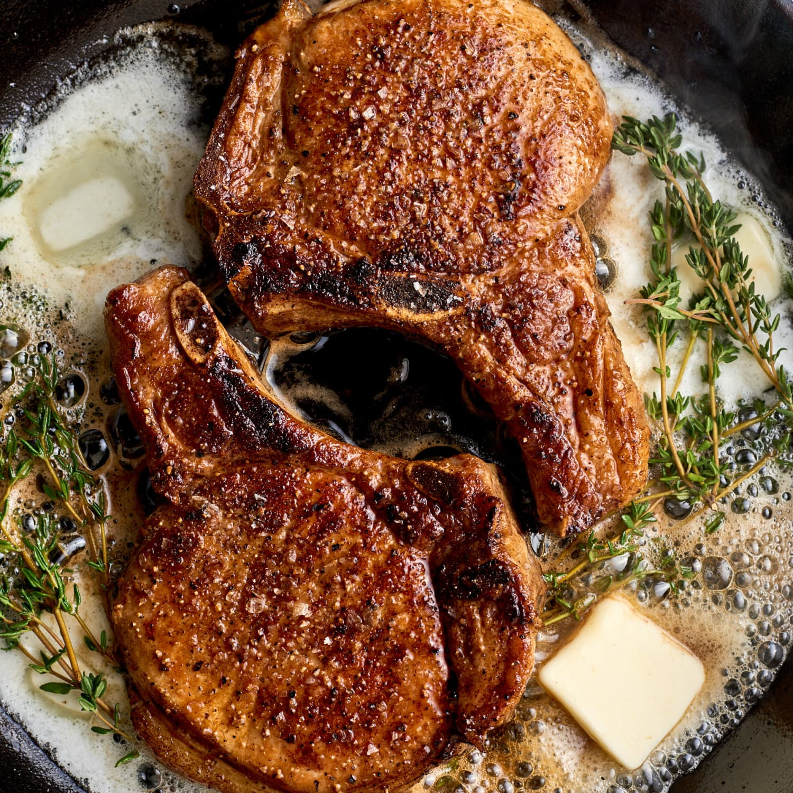

Pan-Fried Pork Chops

Ingredients
- 4 boneless pork chops, 3/4-inch thick
- salt and freshly ground black pepper
- 2 tablespoons all-purpose flour
- ½ cup cooking oil
Steps
- Season both sides of pork chops with salt and pepper,
then sprinkle with flour on both sides.
- Heat oil in a 12-inch non-stick skillet over medium heat until it shimmers.
Carefully add pork chops and pan fry until brown, about 4 minutes.
Do not disturb the chops until ready to turn.
- When you see the edges of the chops turn brown, turn, and pan fry the other
side until no longer pink on the inside and brown on the outside,
an additional 4 minutes.